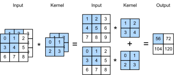

Multiple Input and Multiple Output Channels
:label:sec_channels
While we described the multiple channels that comprise each image (e.g., color images have the standard RGB channels to indicate the amount of red, green and blue) and convolutional layers for multiple channels in :numref:subsec_why-conv-channels, until now, we simplified all of our numerical examples by working with just a single input and a single output channel. This allowed us to think of our inputs, convolution kernels, and outputs each as two-dimensional tensors.
When we add channels into the mix, our inputs and hidden representations both become three-dimensional tensors. For example, each RGB input image has shape $3\times h\times w$. We refer to this axis, with a size of 3, as the channel dimension. The notion of channels is as old as CNNs themselves: for instance LeNet-5 :cite:LeCun.Jackel.Bottou.ea.1995 uses them. In this section, we will take a deeper look at convolution kernels with multiple input and multiple output channels.
using Pkg; Pkg.activate("d2lai")
using d2lai, Flux
Activating project at `~/Projects/D2L/d2lai`Multiple Input Channels
When the input data contains multiple channels, we need to construct a convolution kernel with the same number of input channels as the input data, so that it can perform cross-correlation with the input data. Assuming that the number of channels for the input data is $c_\textrm{i}$, the number of input channels of the convolution kernel also needs to be $c_\textrm{i}$. If our convolution kernel's window shape is $k_\textrm{h}\times k_\textrm{w}$, then, when $c_\textrm{i}=1$, we can think of our convolution kernel as just a two-dimensional tensor of shape $k_\textrm{h}\times k_\textrm{w}$.
However, when $c_\textrm{i}>1$, we need a kernel that contains a tensor of shape $k_\textrm{h}\times k_\textrm{w}$ for every input channel. Concatenating these $c_\textrm{i}$ tensors together yields a convolution kernel of shape $c_\textrm{i}\times k_\textrm{h}\times k_\textrm{w}$. Since the input and convolution kernel each have $c_\textrm{i}$ channels, we can perform a cross-correlation operation on the two-dimensional tensor of the input and the two-dimensional tensor of the convolution kernel for each channel, adding the $c_\textrm{i}$ results together (summing over the channels) to yield a two-dimensional tensor. This is the result of a two-dimensional cross-correlation between a multi-channel input and a multi-input-channel convolution kernel.
:numref:fig_conv_multi_in provides an example of a two-dimensional cross-correlation with two input channels. The shaded portions are the first output element as well as the input and kernel tensor elements used for the output computation: $(1\times1+2\times2+4\times3+5\times4)+(0\times0+1\times1+3\times2+4\times3)=56$.
 :label:fig_conv_multi_in
To make sure we really understand what is going on here, we can (implement cross-correlation operations with multiple input channels) ourselves. Notice that all we are doing is performing a cross-correlation operation per channel and then adding up the results.
function corr2d_multi_in(X, K)
return sum(d2lai.corr2d.(eachslice(X, dims=3), eachslice(K, dims=3)))
endcorr2d_multi_in (generic function with 1 method)We can construct the input tensor X and the kernel tensor K corresponding to the values in :numref:fig_conv_multi_in to (validate the output) of the cross-correlation operation.
X = cat([0. 1. 2.; 3. 4. 5.; 6. 7. 8.], [1. 2. 3.; 4. 5. 6.; 7. 8. 9], dims = 3)
K = cat([0. 1.; 2. 3], [1. 2.; 3. 4.], dims = 3)
corr2d_multi_in(X, K)2×2 Matrix{Float64}:
56.0 72.0
104.0 120.0Multiple Output Channels
:label:subsec_multi-output-channels
Regardless of the number of input channels, so far we always ended up with one output channel. However, as we discussed in :numref:subsec_why-conv-channels, it turns out to be essential to have multiple channels at each layer. In the most popular neural network architectures, we actually increase the channel dimension as we go deeper in the neural network, typically downsampling to trade off spatial resolution for greater channel depth. Intuitively, you could think of each channel as responding to a different set of features. The reality is a bit more complicated than this. A naive interpretation would suggest that representations are learned independently per pixel or per channel. Instead, channels are optimized to be jointly useful. This means that rather than mapping a single channel to an edge detector, it may simply mean that some direction in channel space corresponds to detecting edges.
Denote by $c_\textrm{i}$ and $c_\textrm{o}$ the number of input and output channels, respectively, and by $k_\textrm{h}$ and $k_\textrm{w}$ the height and width of the kernel. To get an output with multiple channels, we can create a kernel tensor of shape $c_\textrm{i}\times k_\textrm{h}\times k_\textrm{w}$ for every output channel. We concatenate them on the output channel dimension, so that the shape of the convolution kernel is $c_\textrm{o}\times c_\textrm{i}\times k_\textrm{h}\times k_\textrm{w}$. In cross-correlation operations, the result on each output channel is calculated from the convolution kernel corresponding to that output channel and takes input from all channels in the input tensor.
We implement a cross-correlation function to [calculate the output of multiple channels] as shown below.
function corr2d_multi_in_out(X, K)
mapreduce(k -> corr2d_multi_in(X, k), (v1, v2) -> cat(v1, v2, dims=3), eachslice(K, dims = 4))
endcorr2d_multi_in_out (generic function with 1 method)K = cat(K, K .+ 1, K .+ 2; dims = 4 )
size(K)(2, 2, 2, 3)corr2d_multi_in_out(X, K)2×2×3 Array{Float64, 3}:
[:, :, 1] =
56.0 72.0
104.0 120.0
[:, :, 2] =
76.0 100.0
148.0 172.0
[:, :, 3] =
96.0 128.0
192.0 224.0$1\times 1$ Convolutional Layer
:label:subsec_1x1
At first, a [$1 \times 1$ convolution], i.e., $k_\textrm{h} = k_\textrm{w} = 1$, does not seem to make much sense. After all, a convolution correlates adjacent pixels. A $1 \times 1$ convolution obviously does not. Nonetheless, they are popular operations that are sometimes included in the designs of complex deep networks :cite:Lin.Chen.Yan.2013,Szegedy.Ioffe.Vanhoucke.ea.2017. Let's see in some detail what it actually does.
Because the minimum window is used, the $1\times 1$ convolution loses the ability of larger convolutional layers to recognize patterns consisting of interactions among adjacent elements in the height and width dimensions. The only computation of the $1\times 1$ convolution occurs on the channel dimension.
:numref:fig_conv_1x1 shows the cross-correlation computation using the $1\times 1$ convolution kernel with 3 input channels and 2 output channels. Note that the inputs and outputs have the same height and width. Each element in the output is derived from a linear combination of elements at the same position in the input image. You could think of the $1\times 1$ convolutional layer as constituting a fully connected layer applied at every single pixel location to transform the $c_\textrm{i}$ corresponding input values into $c_\textrm{o}$ output values. Because this is still a convolutional layer, the weights are tied across pixel location. Thus the $1\times 1$ convolutional layer requires $c_\textrm{o}\times c_\textrm{i}$ weights (plus the bias). Also note that convolutional layers are typically followed by nonlinearities. This ensures that $1 \times 1$ convolutions cannot simply be folded into other convolutions.
 :label:
:label:fig_conv_1x1
Let's check whether this works in practice: we implement a $1 \times 1$ convolution using a fully connected layer. The only thing is that we need to make some adjustments to the data shape before and after the matrix multiplication.
function corr2d_multi_in_out_1x1(X, K)
h, w, cin = size(X)
# size(K) = 1 x 1 x cin x cout
_, _, ch_in, ch_out = size(K)
X = reshape(X, :, ch_in)
K = reshape(K, ch_in, ch_out)
Y = X * K
return reshape(Y, h, w, ch_out)
endcorr2d_multi_in_out_1x1 (generic function with 1 method)X = randn((3,3,3))
K = randn(1, 1, 3, 2)
Y1 = corr2d_multi_in_out_1x1(X, K)
Y2 = corr2d_multi_in_out(X, K)
@assert sum(abs.(Y1 - Y2)) < 1e-6Discussion
Channels allow us to combine the best of both worlds: MLPs that allow for significant nonlinearities and convolutions that allow for localized analysis of features. In particular, channels allow the CNN to reason with multiple features, such as edge and shape detectors at the same time. They also offer a practical trade-off between the drastic parameter reduction arising from translation invariance and locality, and the need for expressive and diverse models in computer vision.
Note, though, that this flexibility comes at a price. Given an image of size $(h \times w)$, the cost for computing a $k \times k$ convolution is $\mathcal{O}(h \cdot w \cdot k^2)$. For $c_\textrm{i}$ and $c_\textrm{o}$ input and output channels respectively this increases to $\mathcal{O}(h \cdot w \cdot k^2 \cdot c_\textrm{i} \cdot c_\textrm{o})$. For a $256 \times 256$ pixel image with a $5 \times 5$ kernel and $128$ input and output channels respectively this amounts to over 53 billion operations (we count multiplications and additions separately). Later on we will encounter effective strategies to cut down on the cost, e.g., by requiring the channel-wise operations to be block-diagonal, leading to architectures such as ResNeXt :cite:Xie.Girshick.Dollar.ea.2017.
Exercises
- Assume that we have two convolution kernels of size $k_1$ and $k_2$, respectively (with no nonlinearity in between).
- Prove that the result of the operation can be expressed by a single convolution.
- What is the dimensionality of the equivalent single convolution?
- Is the converse true, i.e., can you always decompose a convolution into two smaller ones?
- Assume an input of shape $c_\textrm{i}\times h\times w$ and a convolution kernel of shape $c_\textrm{o}\times c_\textrm{i}\times k_\textrm{h}\times k_\textrm{w}$, padding of $(p_\textrm{h}, p_\textrm{w})$, and stride of $(s_\textrm{h}, s_\textrm{w})$.
- What is the computational cost (multiplications and additions) for the forward propagation?
- What is the memory footprint?
- What is the memory footprint for the backward computation?
- What is the computational cost for the backpropagation?
- By what factor does the number of calculations increase if we double both the number of input channels $c_\textrm{i}$ and the number of output channels $c_\textrm{o}$? What happens if we double the padding?
- Are the variables
Y1andY2in the final example of this section exactly the same? Why? - Express convolutions as a matrix multiplication, even when the convolution window is not $1 \times 1$.
- Your task is to implement fast convolutions with a $k \times k$ kernel. One of the algorithm candidates is to scan horizontally across the source, reading a $k$-wide strip and computing the $1$-wide output strip one value at a time. The alternative is to read a $k + \Delta$ wide strip and compute a $\Delta$-wide output strip. Why is the latter preferable? Is there a limit to how large you should choose $\Delta$?
- Assume that we have a $c \times c$ matrix.
- How much faster is it to multiply with a block-diagonal matrix if the matrix is broken up into $b$ blocks?
- What is the downside of having $b$ blocks? How could you fix it, at least partly?
Number of convolution operations per input channel: $\lfloor(n_\textrm{h}-k_\textrm{h}+p_\textrm{h}+s_\textrm{h})/s_\textrm{h}\rfloor \times \lfloor(n_\textrm{w}-k_\textrm{w}+p_\textrm{w}+s_\textrm{w})/s_\textrm{w}\rfloor$
Number of convolution operations for all input channels: $\lfloor(n_\textrm{h}-k_\textrm{h}+p_\textrm{h}+s_\textrm{h})/s_\textrm{h}\rfloor \times \lfloor(n_\textrm{w}-k_\textrm{w}+p_\textrm{w}+s_\textrm{w})/s_\textrm{w}\rfloor \times ci$
Number of convolution operations for all output channels: $\lfloor(n_\textrm{h}-k_\textrm{h}+p_\textrm{h}+s_\textrm{h})/s_\textrm{h}\rfloor \times \lfloor(n_\textrm{w}-k_\textrm{w}+p_\textrm{w}+s_\textrm{w})/s_\textrm{w}\rfloor \times ci \times co$
Number of multiplications in a single convolution: $ kh \times kw$
Number of additions in a single convolution: $ kh \times kw$
Total number of multiplications and additions: $\lfloor(n_\textrm{h}-k_\textrm{h}+p_\textrm{h}+s_\textrm{h})/s_\textrm{h}\rfloor \times \lfloor(n_\textrm{w}-k_\textrm{w}+p_\textrm{w}+s_\textrm{w})/s_\textrm{w}\rfloor \times ci \times co \times (k_h \times k_w)$
Additions for for combining all cin: $ k_h \times kw \times cin $
Number of times we do the above addition: $ co $
Number of additions combining all cin for co times: $ k_h \times kw \times cin \times co$
Total Number of additions: $\lfloor(n_\textrm{h}-k_\textrm{h}+p_\textrm{h}+s_\textrm{h})/s_\textrm{h}\rfloor \times \lfloor(n_\textrm{w}-k_\textrm{w}+p_\textrm{w}+s_\textrm{w})/s_\textrm{w}\rfloor \times ci \times co \times (k_h \times k_w) + k_h \times kw \times cin \times co$
Total Number of multiplications: $\lfloor(n_\textrm{h}-k_\textrm{h}+p_\textrm{h}+s_\textrm{h})/s_\textrm{h}\rfloor \times \lfloor(n_\textrm{w}-k_\textrm{w}+p_\textrm{w}+s_\textrm{w})/s_\textrm{w}\rfloor \times ci \times co \times (k_h \times k_w)$
function fast_corr2d_kwide(X, K)
Y = zeros(size(X) .- size(K) .+ 1)
for j in 1:size(Y, 2)
Y[:, j] .= X[:, j:j+k-1]
end
end